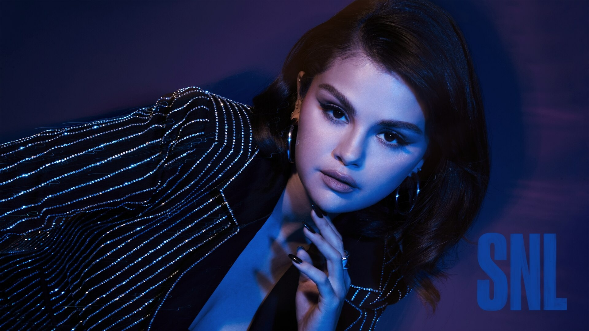

SELENA GOMEZ

Selena Gomez (born July 22, 1992, Grand Prairie, Texas, U.S.) is an American actress and singer who first won legions of young fans as the winsome star of the Disney television series Wizards of Waverly Place (2007–12) and as a pop vocalist. She later transitioned to adult roles, notably Mabel Mora in the TV series Only Murders in the Building (2021– ). Gomez also founded (2020) the cosmetics company Rare Beauty.
Gomez has since released three solo studio albums that debuted atop the US Billboard 200. Her EDM-infused debut record, Stars Dance (2013), yielded the international top-ten single "Come & Get It". She moved to Interscope Records and released the electropop album Revival (2015), supported by the top-ten singles "Good for You", "Same Old Love", and "Hands to Myself". Its follow-up, the dance-pop-influenced Rare (2020), contained her first Billboard Hot 100 number-one single "Lose You to Love Me". Gomez then released the Spanish-language EP Revelación (2021), which earned her nominations at the Grammys and Latin Grammy Awards. She has released many collaborative singles, including "We Don't Talk Anymore", "It Ain't Me", "Wolves", "Taki Taki", and "Calm Down (Remix)", the last of which is the most successful Afrobeats song.
LISA MANOBAL
Lalisa Manobal[a] (Thai: ลลิษา มโนบาล;[b] born Pranpriya Manobal,[c] March 27, 1997), known mononymously as Lisa (Korean: 리사), is a Thai rapper, singer, dancer and actress. She is a member of the South Korean girl group Blackpink, which debuted under YG Entertainment in August 2016. She is set to make her acting debut in 2025 in the HBO television series The White Lotus.
In September 2021, Lisa released her debut single album Lalisa, which made her the first female artist to sell 736,000 copies of an album in its first week in South Korea. The music video for its lead single became the most-viewed music video in the first 24 hours on YouTube by a solo artist. Both "Lalisa" and the album's viral second single "Money" charted in the top ten of the Billboard Global 200, with the latter breaking the record for the longest-charting song by a female K-pop soloist on the US Billboard Hot 100 and the UK Singles Chart. Lalisa and "Money" became the first album and song by a K-pop solo artist to reach one billion streams on Spotify, respectively. In 2024, Lisa established her own management company named Lloud, signed with RCA Records, and achieved her first number-one single on the Billboard Global Excl. US with "Rockstar", the lead single of her debut studio album Alter Ego (2025).